01_V4L2应用程序开发#
参考资料：
mjpg-streamer：https://github.com/jacksonliam/mjpg-streamer
video2lcd：这是百问网编写的APP，它可以在LCD上直接显示摄像头的图像
这2个源码都放在GIT仓库里：
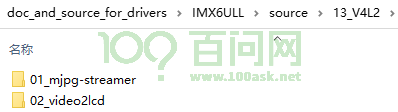
UVC文档
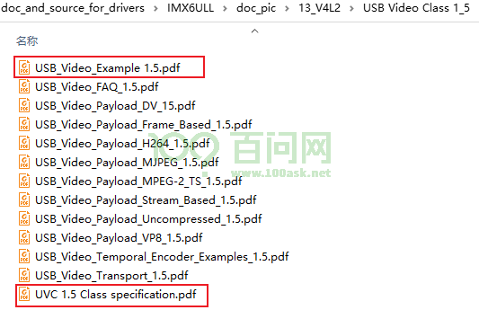
参考文章：https://www.xjx100.cn/news/700965.html?action=onClick
1. 数据采集流程#
可以参考这些文件：
mjpg-streamer\mjpg-streamer-experimental\plugins\input_control\input_uvc.c
video2lcd\video\v4l2.c
Video for Linux two(Video4Linux2)简称V4L2，是V4L的改进版。V4L2支持三种方式来采集图像：内存映射方式(mmap)、直接读取方式(read)和用户指针。内存映射的方式采集速度较快，一般用于连续视频数据的采集，实际工作中的应用概率更高；直接读取的方式相对速度慢一些，所以常用于静态图片数据的采集；用户指针使用较少，如有兴趣可自行研究。
1.1 buffer的管理#
使用摄像头时，核心是”获得数据”。所以先讲如何获取数据，即如何得到buffer。
摄像头采集数据时，是一帧又一帧地连续采集。所以需要申请若干个buffer，驱动程序把数据放入buffer，APP从buffer得到数据。这些buffer可以使用链表来管理。
驱动程序周而复始地做如下事情：
从硬件采集到数据
把”空闲链表”取出buffer，把数据存入buffer
把含有数据的buffer放入”完成链表”
APP也会周而复始地做如下事情：
监测”完成链表”，等待它含有buffer
从”完成链表”中取出buffer
处理数据
把buffer放入”空闲链表”
链表操作示意图如下：

1.2 完整的使用流程#
参考mjpg-streamer和video2lcd，总结了摄像头的使用流程，如下：
open：打开设备节点/dev/videoX
ioctl VIDIOC_QUERYCAP：Query Capbility，查询能力，比如
确认它是否是”捕获设备”，因为有些节点是输出设备
确认它是否支持mmap操作，还是仅支持read/write操作
ioctl VIDIOC_ENUM_FMT：枚举它支持的格式
ioctl VIDIOC_S_FMT：在上面枚举出来的格式里，选择一个来设置格式
ioctl VIDIOC_REQBUFS：申请buffer，APP可以申请很多个buffer，但是驱动程序不一定能申请到
ioctl VIDIOC_QUERYBUF和mmap：查询buffer信息、映射
如果申请到了N个buffer，这个ioctl就应该执行N次
执行mmap后，APP就可以直接读写这些buffer
ioctl VIDIOC_QBUF：把buffer放入”空闲链表”
如果申请到了N个buffer，这个ioctl就应该执行N次
ioctl VIDIOC_STREAMON：启动摄像头
这里是一个循环：使用poll/select监测buffer，然后从”完成链表”中取出buffer，处理后再放入”空闲链表”
poll/select
ioctl VIDIOC_DQBUF：从”完成链表”中取出buffer
处理：前面使用mmap映射了每个buffer的地址，处理时就可以直接使用地址来访问buffer
ioclt VIDIOC_QBUF：把buffer放入”空闲链表”
ioctl VIDIOC_STREAMOFF：停止摄像头
2. 控制流程#
使用摄像头时，我们可以调整很多参数，比如：
对于视频流本身：
设置格式：比如V4L2_PIX_FMT_YUYV、V4L2_PIX_FMT_MJPEG、V4L2_PIX_FMT_RGB565
设置分辨率：1024*768等
对于控制部分：
调节亮度
调节对比度
调节色度
2.1 APP接口#
就APP而言，对于这些参数有3套接口：查询或枚举(Query/Enum)、获得(Get)、设置(Set)。
2.1.1 数据格式#
以设置数据格式为例，可以先枚举：
struct v4l2_fmtdesc fmtdesc;
fmtdesc.index = 0; // 比如从0开始
fmtdesc.type = V4L2_BUF_TYPE_VIDEO_CAPTURE; // 指定type为"捕获"
ioctl(vd->fd, VIDIOC_ENUM_FMT, &fmtdesc);
#if 0
/*
* F O R M A T E N U M E R A T I O N
*/
struct v4l2_fmtdesc {
__u32 index; /* Format number */
__u32 type; /* enum v4l2_buf_type */
__u32 flags;
__u8 description[32]; /* Description string */
__u32 pixelformat; /* Format fourcc */
__u32 reserved[4];
};
#endif
还可以获得当前的格式：
struct v4l2_format currentFormat;
memset(¤tFormat, 0, sizeof(struct v4l2_format));
currentFormat.type = V4L2_BUF_TYPE_VIDEO_CAPTURE;
ioctl(vd->fd, VIDIOC_G_FMT, ¤tFormat);
#if 0
struct v4l2_format {
__u32 type;
union {
struct v4l2_pix_format pix; /* V4L2_BUF_TYPE_VIDEO_CAPTURE */
struct v4l2_pix_format_mplane pix_mp; /* V4L2_BUF_TYPE_VIDEO_CAPTURE_MPLANE */
struct v4l2_window win; /* V4L2_BUF_TYPE_VIDEO_OVERLAY */
struct v4l2_vbi_format vbi; /* V4L2_BUF_TYPE_VBI_CAPTURE */
struct v4l2_sliced_vbi_format sliced; /* V4L2_BUF_TYPE_SLICED_VBI_CAPTURE */
struct v4l2_sdr_format sdr; /* V4L2_BUF_TYPE_SDR_CAPTURE */
__u8 raw_data[200]; /* user-defined */
} fmt;
};
/*
* V I D E O I M A G E F O R M A T
*/
struct v4l2_pix_format {v4l2_format
__u32 width;
__u32 height;
__u32 pixelformat;
__u32 field; /* enum v4l2_field */
__u32 bytesperline; /* for padding, zero if unused */
__u32 sizeimage;
__u32 colorspace; /* enum v4l2_colorspace */
__u32 priv; /* private data, depends on pixelformat */
__u32 flags; /* format flags (V4L2_PIX_FMT_FLAG_*) */
__u32 ycbcr_enc; /* enum v4l2_ycbcr_encoding */
__u32 quantization; /* enum v4l2_quantization */
__u32 xfer_func; /* enum v4l2_xfer_func */
};
#endif
也可以设置当前的格式：
struct v4l2_format fmt;
memset(&fmt, 0, sizeof(struct v4l2_format));
fmt.type = V4L2_BUF_TYPE_VIDEO_CAPTURE;
fmt.fmt.pix.width = 1024;
fmt.fmt.pix.height = 768;
fmt.fmt.pix.pixelformat = V4L2_PIX_FMT_MJPEG;
fmt.fmt.pix.field = V4L2_FIELD_ANY;
int ret = ioctl(vd->fd, VIDIOC_S_FMT, &fmt);
2.1.2 选择输入源#
可以获得当期输入源、设置当前输入源：
int value;
ioctl(h->fd,VIDIOC_G_INPUT,&value); // 读到的value从0开始, 0表示第1个input源
int value = 0; // 0表示第1个input源
ioctl(h->fd,VIDIOC_S_INPUT,&value)
2.1.3 其他参数#
如果每一参数都提供一系列的ioctl cmd，那使用起来很不方便。
对于这些参数，APP使用对应ID来选中它，然后使用VIDIOC_QUERYCTRL、VIDIOC_G_CTRL、VIDIOC_S_CTRL来操作它。
不同参数的ID值不同。
以亮度Brightness为例，有如下调用方法:
查询：
struct v4l2_queryctrl qctrl;
memset(&qctrl, 0, sizeof(qctrl));
qctrl.id = V4L2_CID_BRIGHTNESS; // V4L2_CID_BASE+0;
ioctl(fd, VIDIOC_QUERYCTRL, &qctrl);
/* Used in the VIDIOC_QUERYCTRL ioctl for querying controls */
struct v4l2_queryctrl {
__u32 id;
__u32 type; /* enum v4l2_ctrl_type */
__u8 name[32]; /* Whatever */
__s32 minimum; /* Note signedness */
__s32 maximum;
__s32 step;
__s32 default_value;
__u32 flags;
__u32 reserved[2];
};
获得当前值
struct v4l2_control c;
c.id = V4L2_CID_BRIGHTNESS; // V4L2_CID_BASE+0;
ioctl(h->fd, VIDIOC_G_CTRL, &c);
/*
* C O N T R O L S
*/
struct v4l2_control {
__u32 id;
__s32 value;
};
设置
struct v4l2_control c;
c.id = V4L2_CID_BRIGHTNESS; // V4L2_CID_BASE+0;
c.value = 99;
ioctl(h->fd, VIDIOC_S_CTRL, &c);
2.2 理解接口#
2.2.1 概念#
以USB摄像头为例，它的内部结构如下：
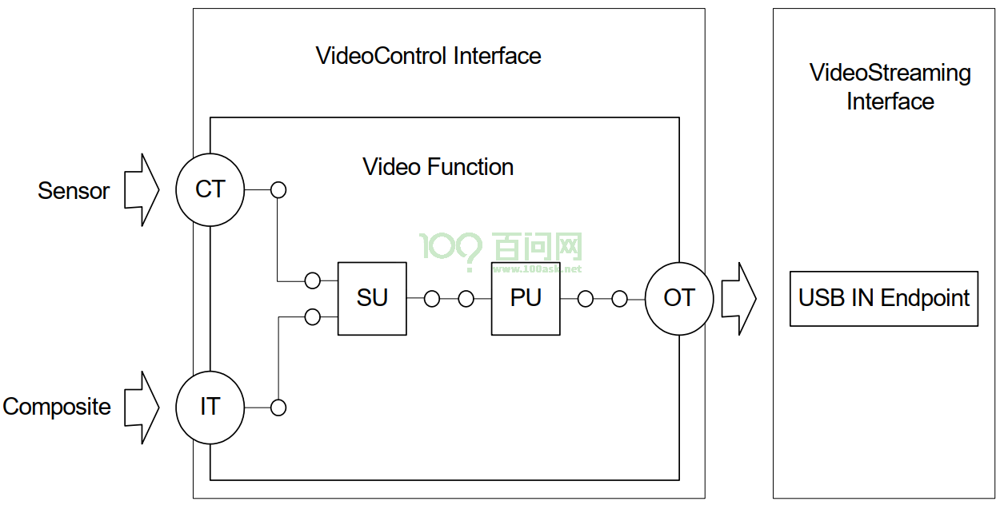
一个USB摄像头必定有一个VideoControl接口，用于控制。有0个或多个VideoStreaming接口，用于传输视频。
在VideoControl内部，有多个Unit或Terminal，上一个Unit或Terminal的数据，流向下一个Unit或Terminal，多个Unit或Terminal组成一个完整的UVC功能设备。
只有一个输出引脚
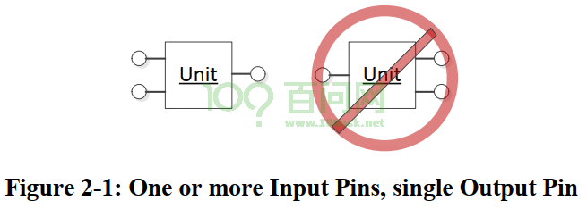
可以Fan-out，不能Fan-in
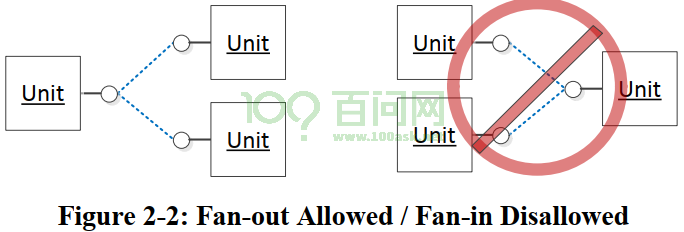
Terminal：位于边界，用于联通外界。有：IT(Input Terminal)、OT(Output Terminal)、CT(Camera Terminal)。模型如下，有一个输出引脚：
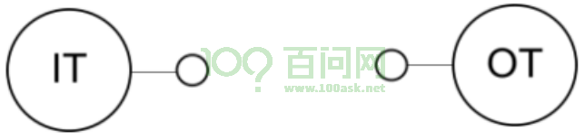
Unit：位于VideoControl内部，用来进行各种控制
SU：Selector Unit(选择单元)，从多路输入中选择一路，比如设备支持多种输入源，可以通过SU进行选择切换。模型如下
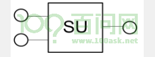
PU：Porocessing Unit(处理单元)，用于调整亮度、对比度、色度等，有如下控制功能：
User Controls
Brightness 背光
Hue 色度
Saturation 饱和度
Sharpness 锐度
Gamma 伽马
Digital Multiplier (Zoom) 数字放大
Auto Controls
White Balance Temperature 白平衡色温
White Balance Component 白平衡组件
Backlight Compensation 背光补偿
Contrast 对比度
Other
Gain 增益
Power Line Frequency 电源线频率
Analog Video Standard 模拟视频标准
Analog Video Lock Status 模拟视频锁状态
模型如下
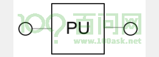
EU：Encoding Unit(编码单元)，对采集所得的数据进行个性化处理的功能。编码单元控制编码器的属性，该编码器对通过它流式传输的视频进行编码。它具有如下功能：
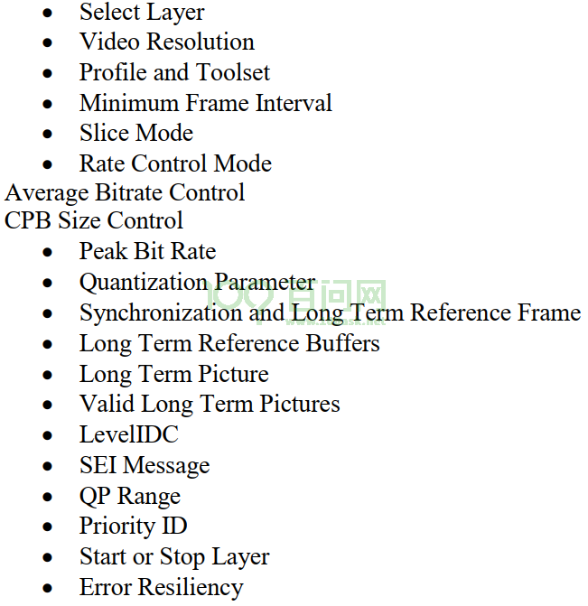
模型如下
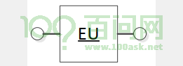
XU：Extension Unit(扩展单元)，厂家可以在XU上提供自定义的操作，模型如下：
2.2.2 操作方法#
我们使用ioctl操作设备节点”/dev/video0”时，不同的ioctl操作的可能是VideoControl接口，或者VideoStreaming接口。
跟视频流相关的操作，比如：VIDIOC_ENUM_FMT、VIDIOC_G_FMT、VIDIOC_S_FMT、VIDIOC_STREAMON、VIDIOC_STREAMOFF，是操作VideoStreaming接口。
其他ioctl，大多都是操作VideoControl接口。
从底层驱动和硬件角度看，要操作VideoControl接口，需要指明：
entity：你要操作哪个Terminal或Unit，比如PU
Control Selector：你要操作entity里面的哪个控制项？比如亮度PU_BRIGHTNESS_CONTROL
控制项里哪些位：比如CT(Camera Terminal)里的CT_PANTILT_RELATIVE_CONTROL控制项对应32位的数据，其中前16位对应PAN控制(左右转动)，后16位对应TILE控制(上下转动)
但是APP不关注这些细节，使用一个ID来指定entity、Control Selector、哪些位：
/*
* C O N T R O L S
*/
struct v4l2_control {
__u32 id;
__s32 value;
};
驱动程序里，会解析APP传入的ID，找到entity、Control Selector、那些位。
但是有了上述知识后，我们才能看懂mjpg-streamer的如下代码：
XU：使用比较老的UVC驱动时，需要APP传入厂家的XU信息；新驱动里可以解析出XU信息，无需APP传入
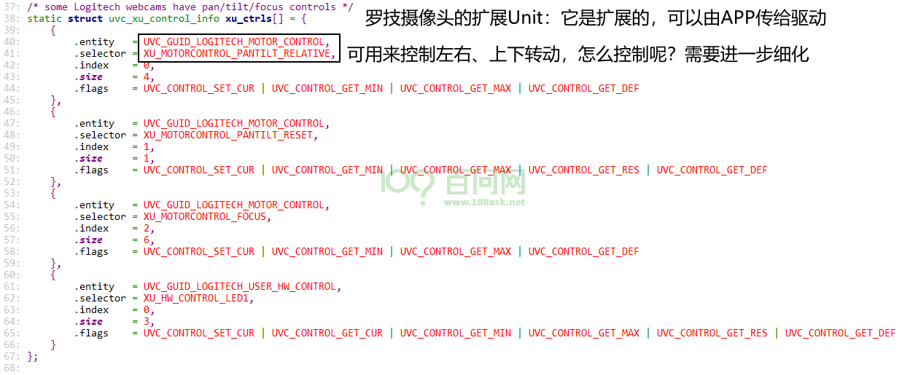
mapping：无论新老UVC驱动，都需要提供更细化的mapping信息
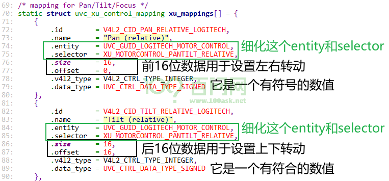
代码如下
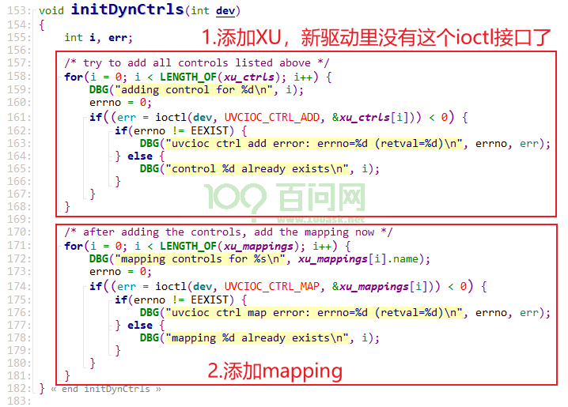
3. 编写APP#
参考：mjpg-streamer，https://github.com/jacksonliam/mjpg-streamer
3.1 列出帧细节#
调用ioctl VIDIOC_ENUM_FMT可以枚举摄像头支持的格式，但是无法获得更多细节（比如支持哪些分辨率），
调用ioctl VIDIOC_G_FMT可以获得”当前的格式”，包括分辨率等细节，但是无法获得其他格式的细节。
需要结合VIDIOC_ENUM_FMT、VIDIOC_ENUM_FRAMESIZES这2个ioctl来获得这些细节：
VIDIOC_ENUM_FMT：枚举格式
VIDIOC_ENUM_FRAMESIZES：枚举指定格式的帧大小(即分辨率)
示例代码如下：
#include <sys/types.h>
#include <sys/stat.h>
#include <fcntl.h>
#include <sys/ioctl.h>
#include <unistd.h>
#include <stdio.h>
#include <string.h>
#include <linux/types.h> /* for videodev2.h */
#include <linux/videodev2.h>
/* ./video_test </dev/video0> */
int main(int argc, char **argv)
{
int fd;
struct v4l2_fmtdesc fmtdesc;
struct v4l2_frmsizeenum fsenum;
int fmt_index = 0;
int frame_index = 0;
if (argc != 2)
{
printf("Usage: %s </dev/videoX>, print format detail for video device\n", argv[0]);
return -1;
}
/* open */
fd = open(argv[1], O_RDWR);
if (fd < 0)
{
printf("can not open %s\n", argv[1]);
return -1;
}
while (1)
{
/* 枚举格式 */
fmtdesc.index = fmt_index; // 比如从0开始
fmtdesc.type = V4L2_BUF_TYPE_VIDEO_CAPTURE; // 指定type为"捕获"
if (0 != ioctl(fd, VIDIOC_ENUM_FMT, &fmtdesc))
break;
frame_index = 0;
while (1)
{
/* 枚举这种格式所支持的帧大小 */
memset(&fsenum, 0, sizeof(struct v4l2_frmsizeenum));
fsenum.pixel_format = fmtdesc.pixelformat;
fsenum.index = frame_index;
if (ioctl(fd, VIDIOC_ENUM_FRAMESIZES, &fsenum) == 0)
{
printf("format %s,%d, framesize %d: %d x %d\n", fmtdesc.description, fmtdesc.pixelformat, frame_index, fsenum.discrete.width, fsenum.discrete.height);
}
else
{
break;
}
frame_index++;
}
fmt_index++;
}
return 0;
}
3.2 获取数据#
根据《1.2 完整的使用流程》来编写程序，步骤如下：
打开设备
ioctl VIDIOC_QUERYCAP：Query Capbility，查询能力
枚举格式、设置格式
ioctl VIDIOC_REQBUFS：申请buffer
ioctl VIDIOC_QUERYBUF和mmap：查询buffer信息、映射
ioctl VIDIOC_QBUF：把buffer放入”空闲链表”
ioctl VIDIOC_STREAMON：启动摄像头
这里是一个循环：使用poll/select监测buffer，然后从”完成链表”中取出buffer，处理后再放入”空闲链表”
poll/select
ioctl VIDIOC_DQBUF：从”完成链表”中取出buffer
处理：前面使用mmap映射了每个buffer的地址，把这个buffer的数据存为文件
ioclt VIDIOC_QBUF：把buffer放入”空闲链表”
ioctl VIDIOC_STREAMOFF：停止摄像头
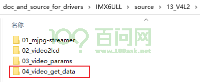
3.3 控制亮度#
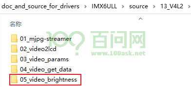